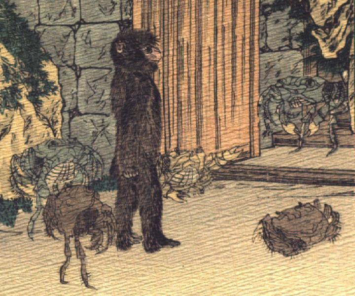

蟹に招かれた猿。猿は歩いて、戸口に入ろうとしている。1体の蟹は、一番下の脚で立ち上がり、戸の向こうで猿を迎えている。戸の両脇に2体の蟹が座っている。猿の後ろに、2体の蟹が一番下の脚で立ち上がっている。
著作者：J.Dautremer／出典：親書誌：U426_nichibunken_0106：La bataille du singe et du crabe／日付：2006／資源識別子：U426_nichibunken_0106_0008_0000
Copyright (c)2010- International Research Center for Japanese Studies, Kyoto, Japan. All rights reserved.